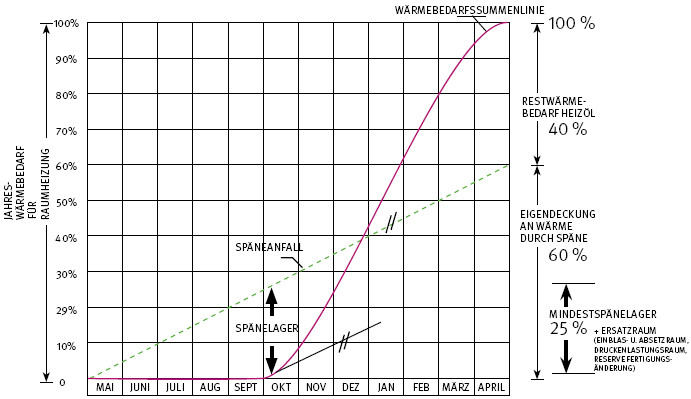

Allgemein kann die benötigte Späne-Lagermenge auch über die Wärmebedarfssummenlinie abgeschätzt werden. Diese Methode bietet sich insbesondere an, wenn zum Heizen zusätzlich zum selbst erzeugten Späne-Material auf Fremdenergieträger (z. B. Heizöl) zurückgegriffen werden muss oder der Späne-Anfall aus betrieblichen Gründen über das Jahr stark schwankt. Das benötigte Späne-Lagervolumen ergibt sich bei Betrachtung der Wärmebedarfssummenlinie als Maximum der Differenz zwischen Wärmeanfallssummenlinie aus den vorhandenen Spänen und der Wärmebedarfssummenlinie (Bild A2-1).

Bild A2-1: Wärmebedarfssummenlinien zur Abschätzung des Späne-Lagerraumes
Wärmeeinheit = unterer Heizwert x Schüttgewicht x Volumen